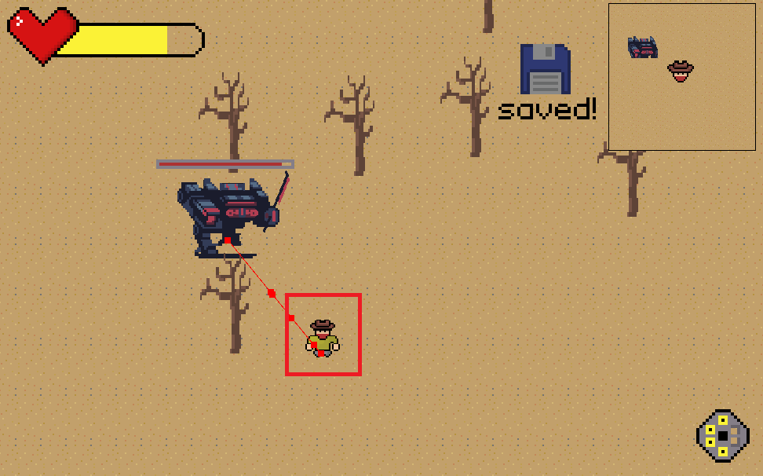
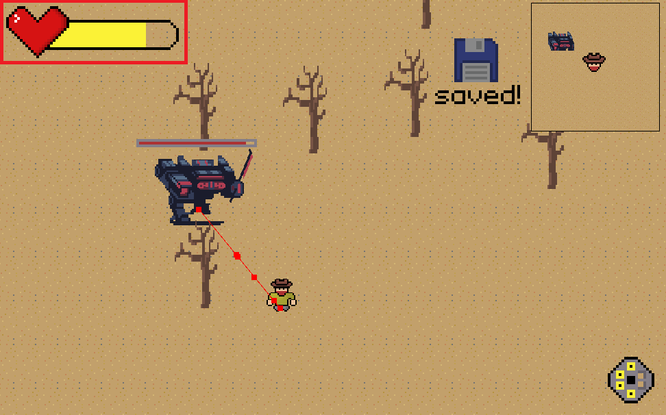
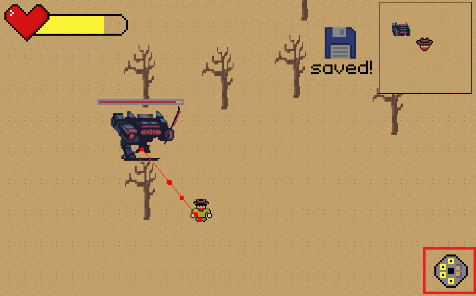
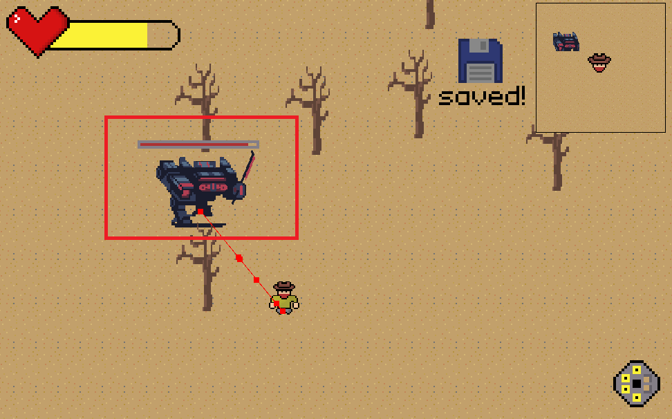
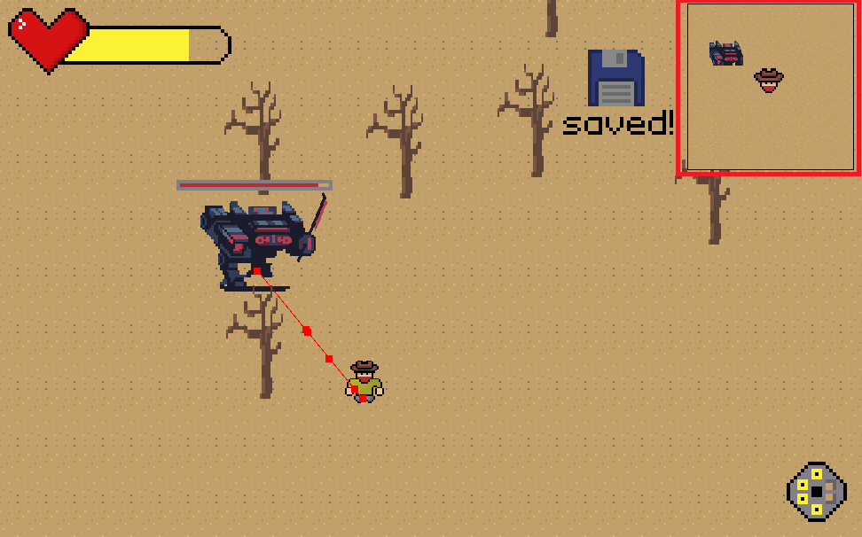
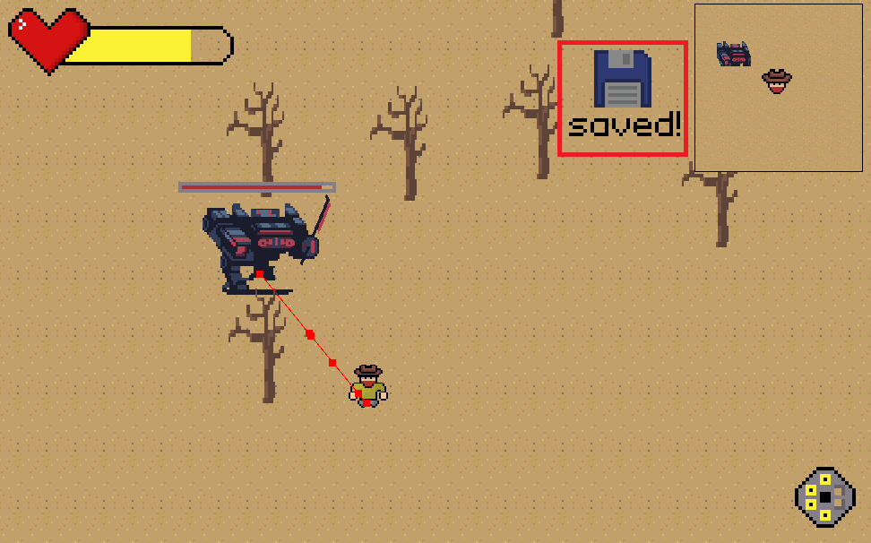
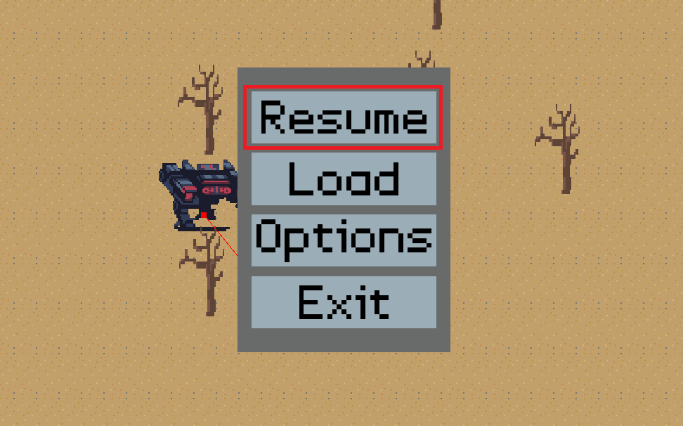
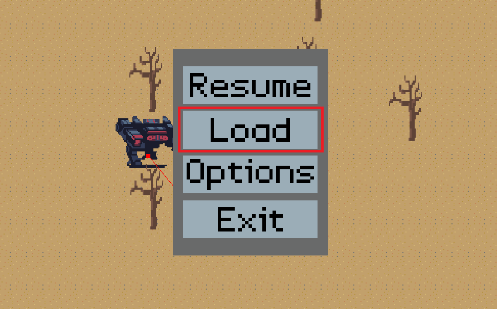
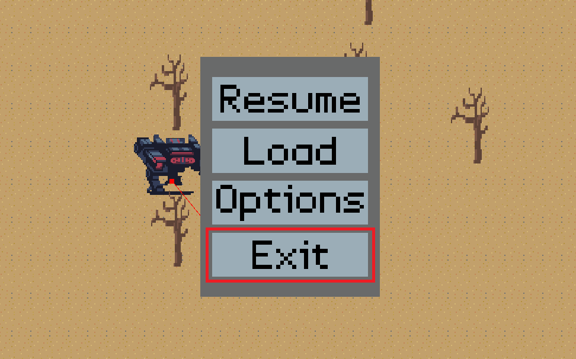

| Dátum | Verzió | Leírás |
|---|---|---|
| 2024. 10. --. | 0.0.1 | Játék indítható képes |
| 2024. 10. --. | 0.0.2 | Véletlenszerű háttéren betöltés |
| 2024. 10. --. | 0.0.3 | Karakter alap mozgás felismerése |
| 2024. 10. --. | 0.0.4 | Karakter 4 irányba való irányítása |
| 2024. 10. --. | 0.0.5 | Alap háttér betöltése |
| 2024. 10. --. | 0.0.6 | Karakter lövedék támadás |
| 2024. 10. --. | 0.0.7 | Karakter Collision |
| 2024. 10. --. | 0.0.8 | Fa-Tile-k betöltése |
| 2024. 10. --. | 0.0.9 | Fa-Tile-k Collision |
| 2024. 10. --. | 0.0.10 | Ellenség betöltése |
| 2024. 10. --. | 0.0.11 | Ellenség látótávolsága |
| 2024. 10. --. | 0.0.11 | Ellenség(ek) mesterséges intelligencia |
| 2024. 10. --. | 0.0.12 | Ellenség(ek) Collision |
Ennek a fejezetnek a célja a készülő alkalmazás szempontjából fontos általános körülmények összefoglalása. Ez nem konkrét követelményeket tartalmaz, hanem azok hátterét világítja meg, segítve a következő fejezetekben részletezett információk megértését. Ide tartozhatnak olyan információk, mint például:
Mivel szeretnénk minél nagyobb közösséget elérni a játékunkkal, egyszerre kell kiszolgálnunk kezdő és tapasztaltabb játékosokat is erre a következő megoldásokat tervezzük:
A különböző játékosok különböző stílusához alkalmazkodva több nehézségi fokozatokat tervezünk a játékunknak, easy, normal és hard. Az easy játékfokozatnál az ellenségek nehezebben vesznek észre, kevesebb lesz a sebzésük, lassabbak lesznek, és a healing item-ek is gyakrabban lesznek felfedezhetőek. Ezt olyan játékosoknak tervezzük, akiknek ez az egyik, ha nem a legelső számítógépes játék, amivel játszanak. A normal nehézségi foknál kicsit erősebbek az ellenfelek, nagyobbat ütnek, gyorsabbak és messzebbről észrevesznek, és a könnyűhöz képest kevesebb heal-elési lehetőségek vannak. Ezt a fokozatot szánjuk az általános játékos közösségnek. A harmadik fokozatnál, a hard fokozatnál, a szörnyek élete 2x akkora lesz, mint a normálnál, és a sebzése is hasonlóan fog nőni. A sebessége nagyon közel lesz a játékoséhoz, így a menekülés sem lesz opció, a healing item-ek pedig csak elrejtett helyeken lehet felfedezni. Ezt a játékmódot azoknak a játékosoknak szánjuk, akik már tapasztaltak a videójátékok világában és nem riadnak vissza a kihívásoktól. A játék egyszeri kijátszása után egy rejtett funkció lesz elérhető, egy hardcore mode, ami hasonlóan funkcionál, mint a hard nehézség, azzal a hozzáadott nehézséggel, hogy a játéknak nem lesz lehetősége az újraéledésre. Minden halálnál törlődik a mentett játékmenet, és a halál helyén egy jelzés lesz, hogy mikor jutott oda. Ezt a játékmódot az igazi fanoknak, és a kihíváshajhász játékosoknak tervezzük.
A kezdő játékosok a játék kezelésébe való belerázódás érdekében tutorial pályákat készítünk, ezek átveszik a játékban lévő alap mechanikákat, mint például a mozgás, lövés vagy inventory használat. A tutorial mapokat a beállításoknál ki lehet kapcsolni, azonban alapbeállításként mindig be lesz kapcsolva egy új játék kezdésnél.
Szeretnénk a játékunk használhatóságát segíteni azoknak is, akik valamilyen testi fogyatékossággal rendelkeznek, ezért beépített tool-t biztosítunk arra, hogy kontrollerre vagy egyéb eszközökre le tudják térképezni a gombokat.
A menü egyszerűen elérhető és logikusan felépített lesz, ami elősegíti a kezelhetőséget és átláthatóságot. Ezeket úgy szeretnénk elérni, hogy például a beállítások, mentések és játékbetöltési lehetőségek gyorsan elérhetőek lesznek.
A játékban időnként lesznek automentések, ezek alapvető beállításként 5 percenként fognak történni, azonban a beállítások között ezt is meg lehet változtatni 10, 15, 30 percre, valamint teljesen ki is lehet kapcsolni. A menüben egy kattintással el lehet menteni a játékállást. Az esetleges mentési hiba esetén mindig el lesz mentve a legutóbbi 10 játék állás mentése, így a játékosnak nem kell azon aggódnia, hogy újra kell kezdenie a játékát.
A mai piacon rengeteg játék közül választhatnak a játékosok, ezért a lehető legjobb teljesítményt szeretnénk biztosítani. Célunk, hogy játékunk gyors, stabil és élvezhető legyen minden játékos számára, függetlenül a használt hardvertől. Az optimalizálás különösen fontos, hogy játékunk minden körülmények között kifogástalanul fusson.
A gyors válaszidő mellett a bemeneti késleltetés minimalizálása érdekében törekedni fogunk az optimalizált vezérlésre és mozgásra, hogy a játékosok azonnali visszajelzést kapjanak.
Az alapértelmezett felbontás a 1920x1080 (Full HD), ami a legtöbb monitorhoz és kijelzőhöz optimális. A nagyobb felbontások támogatása is tervezett, így a játék akár 4K felbontásban is élvezhető lesz azok számára, akik nagyobb teljesítményű géppel rendelkeznek.
Az egyik legnagyobb prioritásunk a stabil 60 FPS biztosítása, még gyengébb hardverek esetén is. Ennek érdekében az opciók között lehetőség lesz a grafikai beállítások finomhangolására, így mindenki az optimális teljesítményt érheti el.
A játék számos grafikai beállítással érkezik, amelyek lehetővé teszik a játékosok számára, hogy saját gépük teljesítményéhez igazítsák a grafikát. Az olyan opciók, mint az árnyékminőség, textúrafelbontás, látótávolság és effektek letiltása, mind segítenek a stabil teljesítmény elérésében.
Fejlett opcióként tervezzük a dinamikus felbontás bevezetését is, amely automatikusan csökkenti a felbontást a teljesítmény fenntartása érdekében, ha a hardver nem képes tartani a stabil FPS-t.
A játék kiadása után is elkötelezettek vagyunk amellett, hogy folyamatosan fejlesszük és támogassuk a játékot a közösség visszajelzései és igényei alapján. A célunk, hogy hosszú távú élményt nyújtsunk a játékosainknak, és fenntartsuk az érdeklődést a játék iránt az alábbi módokon.
A játék kiadása után rendszeresen fogunk kiadni patch-eket, amelyek javítják a játékban előforduló hibákat és optimalizálják a teljesítményt. Ez magában foglalja az apróbb hibajavításokat, valamint a komolyabb teljesítménybeli és stabilitási problémák orvoslását.
Figyelemmel kísérjük a közösségi platformokon (fórumok, közösségi média) érkező visszajelzéseket, és a leggyakrabban jelentett problémákat prioritásként kezeljük.
A megjelenés után több kisebb ingyenes frissítést is tervezünk, amelyek új játékelemeket, eszközöket és kisebb pályarészleteket adnak a játékhoz, hogy új élményeket kínáljunk a közösségnek.
Tervezünk nagyobb tartalmi frissítéseket is fizetős DLC-k formájában. Ezek a bővítmények új pályákat, ellenségeket, karaktereket, fegyvereket és esetleges új játékmódokat tartalmaznak majd, hogy bővítsék és elmélyítsék a játék élményét.
A játék hosszabb élettartama és a core játékosréteg kielégítése érdekében szeretnénk modding eszközöket biztosítani. Ezek lehetővé teszik a játékosok számára, hogy saját pályákat, játékmódokat vagy karaktereket hozzanak létre, és megosszák azokat a közösséggel.
Folyamatosan kapcsolatban maradunk a játékosainkkal a fórumokon, közösségi médián és Discord szerveren. A játékosok visszajelzéseire figyelve igyekszünk válaszolni kérdéseikre, és segíteni őket bármilyen problémával kapcsolatban.
Lehetővé tesszük a játékállások felhőben történő tárolását, így a játékosok bármikor, bármilyen eszközön folytathatják a játékot ott, ahol abbahagyták.
A fejlesztéshez szükséges architektúra kulcsfontosságú, hogy a játék alkalmazás jól szervezett és karbantartható legyen. A projekt számára ideális választás egy két- vagy háromrétegű (tiered) architektúra, amely a felhasználói felület, az üzleti logika és az adatkezelési réteg különválasztását biztosítja. Ez a megközelítés elősegíti a moduláris tervezést, amely hosszú távon könnyen skálázható és karbantartható.
Felhasználói felület réteg: Ez a szint biztosítja az interakciót a felhasználóval, legyen szó grafikus elemekről vagy vezérlési lehetőségekről. A felhasználói élmény szempontjából fontos, hogy az alkalmazás reszponzív és könnyen kezelhető legyen.
Üzleti logika réteg: Itt helyezkedik el a játékmenet, a szabályok, az interakciók és minden olyan folyamat, amely a játék működését irányítja. Az üzleti logika rétegben történik az összes fontos döntés, így fontos, hogy jól strukturált és optimalizált legyen.
Adatbázis réteg: Ez a réteg tárolja a játékban használt adatokat, például a karakterek állapotát, eredményeket vagy a felhasználói fiókhoz kapcsolódó információkat. Egy robusztus adatbázis biztosítja az adatok gyors elérését és a megbízható adatkezelést.
A projekt során a választott fő programozási nyelv a C#, amely jól illeszkedik az Unity motorhoz, valamint számos modern játékfejlesztési funkciót biztosít, amelyek növelik a hatékonyságot. C# használata lehetővé teszi az összetett rendszerek létrehozását, és biztosítja a kód jól strukturáltságát. Emellett a Godot Engine használata során előnyben részesítjük a GDScript-et, amely gyors prototípus-készítést biztosít, különösen a vizuális elemek fejlesztésében.
A fejlesztési környezetek kiválasztása kiemelkedően fontos a hatékony munkavégzés érdekében. A projektben használt fő fejlesztőeszköz a Visual Studio Code, amely az egyetemi hallgatói licenccel ingyenesen elérhető. A Visual Studio Code számos olyan kiegészítőt támogat, amelyek könnyítik a kódírást és a hibakeresést. Emellett a Godot Engine a fő választás a játékfejlesztéshez, mivel ez a környezet rendkívül jól alkalmazható a projekt követelményeinek kielégítésére. A grafikai elemek előállításához Aseprite pixel art eszközt használunk, amely biztosítja a retro stílusú megjelenítést, és kompatibilis a projekt grafikai elvárásaival.
A projekt tervezésénél törekedünk az újra felhasználható elemek integrálására, legyen szó komponens- és osztálykönyvtárakról vagy akár kész kódról. A nyílt forráskódú elemek közül a Godot beépített könyvtárai és a Visual Studio Code kiegészítői kerülnek felhasználásra. Ezek az elemek csökkentik a fejlesztési időt és lehetővé teszik, hogy a már bizonyítottan hatékony megoldásokat gyorsan és hatékonyan implementáljuk a projektben. A grafikai tervezéshez és az interakciók megvalósításához szintén olyan elemeket választunk, amelyek jól illeszkednek a meglévő rendszerekhez, és biztosítják a stabil működést.
A projekt folyamán az Agile fejlesztési módszertant alkalmazzuk, amely lehetővé teszi a folyamatos fejlesztést és a rendszeres iterációkat. Ez a megközelítés biztosítja, hogy a projekt rugalmassága megmaradjon, és képesek legyünk gyorsan reagálni a változásokra. A Scrum alapú rendszer elősegíti a feladatok heti vagy kétheti sprintjeit, melyek során az egyes funkciókat vagy feladatokat gyorsan, de következetesen lehet megvalósítani.
A projekt különböző platformokon való futtatását előíró követelmények befolyásolják a tervezést. A játék PC-re és konzolra egyaránt fejlesztésre kerül, ami a hardveres erőforrások eltérései miatt kihívásokat jelent. Az eltérő képernyőméretek, vezérlők és grafikai teljesítmény szempontjából figyelembe kell venni a platformok közötti különbségeket, hogy a játék minden eszközön azonos élményt nyújtson.
A játék teljesítményének megfelelnie kell a mai szabványoknak, különösen a képkockasebesség és a betöltési idő terén. A teljesítménybeli elvárások hatással vannak a grafikai részletekre, mivel a túlzott részletesség ronthatja a sebességet. Ezért különös figyelmet fordítunk az optimalizálásra, hogy a játékélmény ne sérüljön.
A rendelkezésre álló erőforrások korlátozzák a fejlesztési folyamatokat:
A szellemi tulajdon védelmére vonatkozó jogi előírások betartása elengedhetetlen, beleértve a szerzői jogokat és az adatvédelmi törvényeket. A játék során figyelembe kell venni az alkalmazott technológiákra vonatkozó szabványokat és előírásokat, amelyek meghatározzák, hogyan kell az adatokat tárolni és kezelni a felhasználók biztonsága érdekében.
A játék célcsoportja számára elengedhetetlen az egyszerű, intuitív használat és a magas minőségű élmény biztosítása. A felhasználói élményhez igazodó fejlesztési döntések meghozatalakor figyelembe kell venni a különböző készségi szinteket és hozzáférési igényeket, különös tekintettel a diszlexiás felhasználók igényeire.
A modern játékok fejlesztésénél elengedhetetlen a felhasználók számára készült on-line dokumentáció és help rendszer kialakítása. Ez a rendszer nemcsak a játékosok számára nyújt információkat, hanem segíti a fejlesztőket is a felhasználói visszajelzések kezelésében és a termék folyamatos fejlesztésében.
Az on-line dokumentációnak tartalmaznia kell a játék különböző aspektusait, beleértve a játékmechanikát, a karaktereket, a játékmenetet és a különböző funkciókat. Az anyagokat érthető, világos nyelven kell megfogalmazni, hogy a játékosok könnyen eligibilizálhassák magukat a játék világában. Emellett fontos, hogy a dokumentáció rendszeresen frissüljön, figyelembe véve a frissítéseket és a felhasználói visszajelzéseket.
A help rendszer részeként szükséges egy FAQ szekció létrehozása, amely a leggyakrabban felmerülő kérdéseket és problémákat tartalmazza. Ez segít a felhasználóknak gyorsan megtalálni a válaszokat, anélkül, hogy közvetlenül a támogatási csapathoz kellene fordulniuk. A gyakori kérdések megválaszolása nemcsak a felhasználói élményt javítja, hanem csökkenti a támogatási igényeket is.
A dokumentáció interaktív útmutatók és videók segítségével is bővíthető. Ezek a vizuális elemek segíthetnek a játékosoknak a játékmenet és a funkciók megértésében, valamint megkönnyítik a tanulási folyamatot. A videók különösen hasznosak lehetnek, mivel a játékosok gyakran jobban megértik az információkat a látványos, gyakorlati példákon keresztül.
A help rendszerben ajánlott lehetőséget biztosítani a közvetlen támogatásra is, például egy élő chat funkcióval, ahol a felhasználók valós időben kaphatnak segítséget a problémáik megoldásában. Ez a lehetőség növeli a felhasználói elégedettséget és bizalmat, hiszen a játékosok tudják, hogy bármikor segítséget kaphatnak, ha szükségük van rá.
A dokumentáció és help rendszer részeként fontos a felhasználói visszajelzések gyűjtése is. Ez segíti a fejlesztőket a hibák kijavításában és az új funkciók megtervezésében. A játékosok számára egyszerű és gyors módot kell biztosítani arra, hogy megosszák tapasztalataikat és javaslataikat, ezzel hozzájárulva a termék folyamatos fejlődéséhez.
A közösségi platformok, mint például Discord, Reddit és Facebook csoportok, szintén kulcsszerepet játszanak a felhasználói dokumentáció kiegészítésében. A Discord lehetőséget biztosít a valós idejű kommunikációra, ahol a játékosok megoszthatják tapasztalataikat, stratégiáikat és kérdéseiket más felhasználókkal. Ez egyben közvetlen kapcsolatot is teremt a fejlesztőcsapattal, ahol a felhasználók közvetlenül jelezhetik a problémáikat és javaslataikat.
Reddit fórumok szintén kiváló helyszínek a játékkal kapcsolatos diskurzusra, ahol a felhasználók részletesen beszélgethetnek a játék különböző aspektusairól. A fejlesztők aktív részvétele ezeken a platformokon javíthatja a felhasználói élményt és a közösségi elköteleződést.
A felhasználói visszajelzések és a közösségi interakciók elemzése segíthet a játék fejlesztésének irányításában. A közösség által generált tartalmak, például útmutatók és videók, szintén bővíthetik a dokumentációt, és a játékosok számára még hasznosabbá tehetik azt.
A fent említett elemek biztosítják, hogy a játékosok számára elérhető on-line dokumentáció és help rendszer hatékonyan támogassa a felhasználói élményt, és hozzájáruljon a játék sikeréhez.
Az alkalmazás fejlesztése során különböző kész komponenseket és könyvtárakat fogunk felhasználni, amelyek segítik a fejlesztési folyamatot, és lehetővé teszik a funkcionalitás gyorsabb megvalósítását. A következő alpontokban részletezzük az alkalmazásba építendő szabad felhasználású elemeket, valamint a forrást és a felhasználás szabályait.
A szabad felhasználású elemek esetében meg kell jelölni a forrást és a felhasználás szabályait. A következő komponenseket tervezzük használni:
A fentieken kívül az alábbi fejlesztői eszközöket is használjuk a projekt során:
Fontos, hogy minden felhasználásra kerülő komponens esetében betartsuk a vonatkozó licensz feltételeket, hogy elkerüljük a jogi következményeket. A szabad felhasználású anyagok esetében figyelni kell a forrás megjelölésére és a felhasználás szabályaira. A dokumentációban nyomon kell követnünk a felhasznált komponenseket és azok forrásait, hogy a későbbi fejlesztések során is könnyen hozzáférhető legyen.
A fejlesztési folyamat során figyelembe kell venni a közösségi támogatást is, mivel sok szabadon felhasználható komponens egy aktív közösség által készül. A GitHub és a Reddit platformokon található fórumszálak, ahol a fejlesztők tapasztalatokat oszthatnak meg, segíthetnek a problémák gyors megoldásában és a legjobb gyakorlatok alkalmazásában. A Discord csoportok is hasznosak lehetnek, ahol közvetlen támogatást kaphatunk a tapasztalt fejlesztőktől, valamint közvetlenül kapcsolatba léphetünk más projektekkel, amelyek hasonló technológiákat használnak. Ezen közösségi források kihasználásával optimalizálhatjuk a fejlesztési folyamatunkat, és biztosíthatjuk, hogy a felhasználásra kerülő komponensek megfelelnek a projekt követelményeinek.
Fontos kiemelni, hogy a szabad felhasználású eszközök és források használata nemcsak költséghatékony, hanem inspiráló is lehet. A közösségi projektek és a nyílt forráskódú szoftverek betekintést nyújtanak a legújabb technológiákba, valamint lehetőséget adnak arra, hogy a fejlesztők tanuljanak egymástól és együttműködjenek. Az ilyen típusú együttműködések nemcsak a tudásmegosztás szempontjából fontosak, hanem hozzájárulnak a projekt minőségének javításához is, mivel a közösségi visszajelzések és a közös munkafolyamatok révén folyamatosan fejlődhetünk. Ezenkívül, ha nyílt forráskódú megoldásokat használunk, nagyobb eséllyel kapunk támogatást és frissítéseket a közösségtől, amely folyamatosan dolgozik az eszközök fejlesztésén.
Ebben a fejezetben kell specifikálni a rendszer valamennyi külső kapcsolatát, az ezt biztosító interfészeket.
A játék felhasználói felülete egy egyszerű, áttekinthető menürendszert kínál, amely lehetővé teszi a játékosok számára a gyors navigációt és a játék különböző funkcióinak elérését.
Az interfész gyors válaszidővel reagál a játékos műveleteire, és vizuálisan is megfelel a játék retro, pixel art esztétikájának.
A HUD egy olyan felület, ahol a játékkal kapcsolatos legfontosabb információkról kap tájékoztatást a játékos. Ezt megpróbáljuk a legátláthatóbbá és letisztultabbá tenni, nem elterelve a játékos figyelmét kulcsfontosságú pillanatokban.
A cowboy karakter a főhős, akit a játékos irányít. A karakter képes lőni, és limitált mennyiségű élettel rendelkezik, ezért menekülnie kell az ellenségektől.
Ez az ikon a játékos életerejének mennyiségéről tájékoztatja a játékost. Ha a játékosnak elfogy az életereje, akkor meghal a karakter, és a legutóbbi mentésnél kell újrakezdeni a játékot. Az életerő teljes élet esetén zöld színű, ha viszont 75% alá esik, akkor átvált sárgára, 50% alatt narancssárgára, és 25% alatt pirosra, ilyenkor egy rövid hanghatás is tájékoztatja erről a játékost.
Az aktuális lőszermennyiség tájékoztatására szolgáló mutató. A játékos 6 golyóval rendelkezik, az "R" gomb lenyomásával tudja újratölteni a tárat, amely körülbelül 1 másodpercig tart. A tár kiürülése esetén egy hanghatás hallható, amely a játékos figyelmének felhívására szolgál. Ha 20 másodpercig nem tölt újra a játékos, akkor egy tipp ablak ugrik fel a képernyő oldalán, ami az újratöltéssel kapcsolatos információkat ad a játékosnak.
Az ellenségek sok változatban jelennek meg a játékban, némelyik közelharci, némelyik pedig távolsági támadásokkal rendelkezik. Az ellenségek feje felett látható az életerejük, ha ez a mutató üres lesz, akkor az ellenség meghal.
Egy kis térkép, amely mutatja a játékos pozícióját, a fontosabb felfedezni való területeket (például bossok, questek, felfedezett rejtett helyek) és az ellenségeket.
Mentések és autosave-ek: A játékban időnként lesznek automatikus mentések, amelyek alapvető beállításként 5 percenként fognak történni. Azonban a beállítások között ezt is meg lehet változtatni 10, 15, vagy 30 percre, valamint teljesen ki is lehet kapcsolni. A menüben egy kattintással el lehet menteni a játékállást. Az esetleges mentési hiba esetén mindig el lesz mentve a legutóbbi 10 játékállás mentése, így a játékosnak nem kell aggódnia, hogy újra kell kezdenie a játékot.
Lehetővé teszi, hogy a játékos gyorsan elérje a különböző tárgyait vagy az akadályok eltüntetésére szolgáló eszközöket.
A küldetések vagy feladatok célkitűzéseinek rövid összefoglalása, hogy a játékos mindig tisztában legyen azzal, mit kell tennie.
A "Resume" menüpont segítségével vissza tud a játékos lépni a pause menüből a játékba.
A "Load" menüpont segítségével vissza tudod tölteni a régebbi mentéseket.
Az "Options" menüpont segítségével a játékos be tud lépni a beállításokba.
Az "Exit" menüponttal a játékos ki tud lépni a játékból.
A beállítások menü lehetőséget nyújt a játék különböző paramétereinek testreszabására, hogy a játékos személyre szabott élményt kapjon. A beállítások az alábbi menüpontokra oszlanak:
A felbontás, textúraminőség, árnyékok, anti-aliasing és egyéb vizuális elemek testreszabása, hogy a játék optimális teljesítménnyel fusson a játékos eszközén.
A háttérzene, hanghatások, beszédhang és egyéb hangok hangerő-beállításai.
A billentyűk vagy gombok átkonfigurálása, érzékenység beállítása, invertálás, valamint a kontroller beállításai.
Lehetőség a játék nyelvének megváltoztatására a különböző lokalizációk támogatásával.
Ezek a felületek lehetővé teszik a játékos számára, hogy kezelje felszerelését és fejlessze karakterét.
Az összes megszerzett tárgy, fegyver, páncél és egyéb felszerelés megjelenítése. Lehetővé teszi a játékosnak, hogy válogasson, felszereljen vagy eladjon tárgyakat.
A karakter képességeinek és tulajdonságainak fejlesztésére szolgáló felület. A játékos itt szerezhet új képességeket, javíthatja statisztikáit, és testre szabhatja a játékstílusát.
A játék különböző hardvereszközökön futtatható, beleértve az asztali számítógépeket, laptopokat és vezérlőeszközöket (kontrollerek).
A játék automatikusan felismeri a csatlakoztatott vezérlőeszközt, és alkalmazkodik a használt eszköz típusához.
A játék fejlesztéséhez és futtatásához különböző szoftveres eszközökre van szükség, amelyek biztosítják a megfelelő működést és integrációt.
Az interfészek biztosítják, hogy a különböző szoftverek között zökkenőmentesen történjen a fájlok megosztása, és a fejlesztés során integrált munkafolyamat alakuljon ki.
A játék egyéni és online módban is használható. Online módban külső szerverekhez csatlakozik a multiplayer funkciók biztosításához.
Az interfész biztosítja, hogy az online játék késleltetése minimális legyen, és az adatok védelme megfelelő szinten történjen.
A játék fejlesztése során különböző technikai és jogi szabványokat kell figyelembe venni. Ezek biztosítják, hogy a termék megfeleljen a nemzetközi elvárásoknak, valamint a technikai és szakterületi szabályozásoknak. A szabványok betartása elősegíti a termék minőségének biztosítását és az esetleges jogi követelményeknek való megfelelést.
Az alábbi szabványok betartása jogszabályi vagy ipari előírások miatt kötelező.
Leírás: Az Európai Unió adatvédelmi szabályozása, amely biztosítja a felhasználók személyes adatainak védelmét. Kötelező megfelelni annak érdekében, hogy az európai felhasználók adatvédelmét biztosítsuk.
Követelmények: A játék adatkezelési folyamatai során biztosítani kell a személyes adatok biztonságos tárolását és kezelését. Az adatokat csak a szükséges ideig szabad tárolni, és a felhasználóknak bármikor lehetőséget kell biztosítani az adataik törlésére.
Leírás: Az ISO/IEC 27001 szabvány az információbiztonság irányítására szolgáló nemzetközi szabvány, amely garantálja az adatbiztonságot a rendszeren belül.
Követelmények: Az adatkezelés során be kell tartani az adatbiztonsági eljárásokat, különös tekintettel az adatfeldolgozás és -tárolás folyamatára, hogy minimalizáljuk az adatvesztés és a jogosulatlan hozzáférés kockázatát.
Leírás: A WCAG szabvány az akadálymentes használhatóságot biztosítja a digitális platformokon, különösen a látás- és hallássérült felhasználók számára.
Követelmények: A játék felhasználói felületének megtervezése során biztosítani kell az akadálymentes használhatóságot, például a megfelelő színkontrasztot, a vizuális elemek és szövegek olvashatóságát, valamint a billentyűzettel való navigálást.
Leírás: Egy amerikai szabályozás, amely a 13 éven aluli gyermekek online adatvédelmét célozza. Bár a játék célközönsége fiatal felnőttek, fontos figyelembe venni a COPPA-t, amennyiben gyermekek is hozzáférhetnek a játékhoz.
Követelmények: Biztosítani kell, hogy a játék során a gyermekek személyes adatait ne tároljuk vagy továbbítsuk anélkül, hogy megfelelő szülői beleegyezést kérnénk, és a megfelelő adatvédelmi eljárásokat alkalmazzuk.
Leírás: Az ISO 9001 szabvány biztosítja, hogy a fejlesztési folyamatok magas minőségi szintet tartsanak fenn.
Követelmények: A szabvány megköveteli a folyamatok optimalizálását és a folyamatos fejlesztési ciklusokat a minőség biztosítása érdekében, amelyek a fejlesztéstől kezdve a tesztelésig és a termék kiadásáig terjednek.
Olyan szabványok, amelyek betartása nem kötelező, de segítik a projekt minőségének biztosítását, vagy elősegítik a kompatibilitást más rendszerekkel és platformokkal.
Főhős: A főhős egy tudós egy cyberpunk stílusú jövőben játszódó világban. A tudományos eredményei miatt üldözik titkosított entitások. Az üldözők egy nemvárt pillanatban rácsapnak a tudósra, a harc során a tudós TeleWatch készüléke, megrongálódik, ez a készülék egy új találmánya, ami képes térben és időben teleportálni őt. A megrongálódott készülék visszarepíti főhősünket egy számára ismeretlen időbe. Azonban az ellenséges erők számára is elérhető egy fajta teleportációs készülék. A főhős feladata, hogy a téridő ugrásból hátramaradt fekete lyukak segítségével hazajusson.
Középkori ellenségek: WORK IN PROGRESS
NPCk: WORK IN PROGRESS
| Easy | Medium | Hard | |
|---|---|---|---|
| cowboy főhős: | életerő: 200 | életerő: 175 | életerő: 150 |
| sebzés: 25 | sebzés: 20 | sebzés: 15 | |
| sebesség: 1 | sebesség: 1 | sebesség: 1 | |
| sebzés típus: távolsági | sebzés típus: távolsági | sebzés típus: távolsági |
Scifi ellenségek: Létezik egy titkos szerveződés, akiknek a célja a világuralom megszerzése, ezt a létező összes tudományos készüléket, megszerzésével és használatával akarják elérni. Az utolsó tudós, aki még ellen mer szegülni ennek az erőnek, a Főhős, ezért a szervezet legnagyobb célja a tudós levadászása. Ellenségek felépítése: cyborgok, űrlények, robotok.
Western ellenségek: A kietlen posztapátságban a legnagyobb veszélyt nem csak a meleg és a vándorlás jelenti, hanem úgy kapzsi és környőleten zsivány banda, akiknek a fő célja a legutolsó emberek és az értékek szállító vonat fosztogatása, természetesen nem tesznek kivételt időutazókkal szemben sem. A főhős életét a különböző vadnyugati élővilág sem segíti.
| Easy | Medium | Hard | |
|---|---|---|---|
| mérgeskígyó: | életerő: 100 sebzés: 10 sebesség: 0.5 sebzés típus: közelharci knockback res: 30% health drop: s:10%, m:4%, b:0% |
életerő: 140 sebzés: 25 sebesség: 0.6 sebzés típus: közelharci knockback res: 40% health drop: s:6%, m:2%, b:0% |
életerő: 200 sebzés: 60 sebesség: 0.8 sebzés típus: közelharci knockback res: 50% health drop: s:2%, m:0.5%, b:0% |
| skorpió: | életerő: 80 sebzés: 20 sebesség: 0.7 sebzés típus: közelharci knockback res: 20% health drop: s:10%, m:4%, b:0% |
életerő: 120 sebzés: 40 sebesség: 0.8 sebzés típus: közelharci knockback res: 35% health drop: s:6%, m:2%, b:0% |
életerő: 180 sebzés: 80 sebesség: 0.9 sebzés típus: közelharci knockback res: 50% health drop: s:2%, m:0.5%, b:0% |
| préri kutya: | életerő: 40 sebzés: 100 sebesség: 1.2 sebzés típus: közelharci knockback res: 0% health drop: s:10%, m:10%, b:0% |
életerő: 45 sebzés: 120 sebesség: 1.4 sebzés típus: közelharci knockback res: 10% health drop: s:6%, m:6%, b:0% |
életerő: 60 sebzés: 150 sebesség: 1.6 sebzés típus: közelharci knockback res: 20% health drop: s:2%, m:2%, b:0% |
| keselyű: | életerő: 200 sebzés: 15 sebesség: 0.3 sebzés típus: közelharci knockback res: 80% health drop: s:30%, m:4%, b:0% |
életerő: 240 sebzés: 20 sebesség: 0.4 sebzés típus: közelharci knockback res: 90% health drop: s:10%, m:5%, b:0% |
életerő: 300 sebzés: 30 sebesség: 0.5 sebzés típus: közelharci knockback res: 100% health drop: s:5%, m:0%, b:0% |
| zsiványok: | életerő: 160 sebzés: 40 sebesség: 0.7 sebzés típus: távolsági knockback res: 50% health drop: s:10%, m:4%, b:0% |
életerő: 180 sebzés: 50 sebesség: 0.8 sebzés típus: távolsági knockback res: 60% health drop: s:6%, m:2%, b:0% |
életerő: 200 sebzés: 60 sebesség: 0.9 sebzés típus: távolsági knockback res: 70% health drop: s:2%, m:0.5%, b:0% |
Mentések és autosave-ek: A játékban időnként lesznek auto mentések, ezek alapvető beállításként 5 percenként fognak történi, azonban a beállítások között ezt is meg lehet változtatni 10, 15, 30 percre, valamint teljesen ki is lehet kapcsolni. A menüben egy kattintással el lehet menteni a játékállást. Az esetleges mentési hiba esetén mindig el lesz mentve a legutóbbi 10 játék állás mentése, így a játékosnak nem kell azon aggódnia, hogy újra kell kezdenie a játékát.
Ha a játékosnak elfogy az életereje, akkor meghal a karakter és a legutóbbi mentésnél kell újrakezdeni a játékot. Az életerő teljes élet esetén zöld színű, ha viszont 75% alá esik akkor átvált sárgára, 50% alatt narancssárgára és 25% alatt pirosra, ilyenkor egy rövid hanghatás is tájékoztatja erről a játékost. Az életerő nem töltődik vissza magától, erre specifikus itemek hivatottak. Ezek az itemek a healing itemek, a legelterjedtebb ilyen itemek a különböző ételek lesznek, melyek a játékos életének 25%-át gyógyítják, az ennél ritkább ámde értékesebb gyógyításra alkalmas tárgy a kötszer, amely a játékos életének az 50%-át gyógyítja, és a leghasznosabb tárgy ebben a kategóriában az elsősegélydoboz, ez az életerőt teljesen felgyógyítja. Azonban ilyen erős itemek csak boss harcok után és rejtett helyeken lehet majd megszerezni, míg a gyengébb hatású gyógyító eszközöket az ellenfelek droppolhatják. Az ilyesfajta megszerzések a játék nehézségi fokozata nagyban befolyásolja. Easy fokozaton a kis healing item 10% eséllyel droppolódik, a közepes pedig 4% eséllyel. Mediumon a kis healing item 6% eséllyel, a közepes pedig 2%-al. A hard fokozaton 2% eséllyel droppolódik a kicsi és 0,5% eséllyel a közepes. A nagy healing itemeket nem befolyásolja a nehézségi fokozat.
A játékosnak több különböző küldetést kell elvégeznie, hogy jobb fegyvere és több pénze legyen azonban ezek mellett a legfontosabb, hogy a játék előrre haladhasson, mivel a fő ellenfelek és a különböző előrre jutáshoz szükséges felszerelések, csak küldetések révén hozzáférhetőek. A játékos specifikus NPC-ktől tudja felvenni, ezeket a küldetéseket. A legtöbb küldetés egyszerűbb lefolyású és nincs szükség nagy erőfeszítésre a teljesítésükhöz. A legtöbb küldetés 3 csoportra oszthatóak, az első az quest itemek begyűjtése, amik általában dungeonokbe, vagy más ellenségektől hemzsegő területeken találhatóak. Ezeknek általában a térképen jól láthatóan jelölve van a pozíciójuk, a frusztrált keresgélés elkerülése érdekében. A questek második csoportja, a "fejvadászat". Ezeknél a küldetéseknél vagy egy bizonyos ellenségtípust, vagy bizonyos főellenfelet kell levadászni. Ennek a küldetéstípusnak a térképen való jelölése sokkal kevésbé definiált. Itt általában csak egy terület van kijelölve, ahol megtalálható a keresett ellenfél. A küldetések harmadik típusa pedig a puzzle küldetések. Ezek olyan küldetések, ahol a küldetés teljesítésének kulcsa a kreatív gondolkozás. Ezeknek a küldetéseknek a megoldása több játékosnak hosszas fejtörést okozhat, ezért nem tartoznak a fő küldetés szálak közé, így elkerülve a játékos untatását és frusztráltságát.
A különböző küldetésekért cserébe aranyat és tárgyi jutalmakat is szerezhet a játékos, ez főként a küldetés bonyolultságától és nehézségétől függ. A küldetések mindig tartalmaznak valamennyi mennyiségű aranyat, és e mellett esetlegesen tartalmazhatnak különböző healing tárgyakat, vagy valamilyen stat növelő potionoket.
A játékban találhatóak különböző boltok és árusok, ahol a küldetésekért kapott aranyat tudjuk, fegyverekre, healing itemekre vagy potionokre cserélni. A boltok felszereltsége függ az adott helytől, egy vándor árus kevesebb áruval rendelkezik, mint egy város boltja, azonban akár exkluzív tárgyak is találhatóak náluk. A vándor árusok pozíciója változó, egy adott szakaszon haladnak, ez elkerüli a falvakat és az ellenségektől hemzsegő területeket, a szakaszon egy teljes kört ~30perc alatt tesz meg, az árus éjjel és nappal is elérhető. A városokban lévő boltosokat mindig ugyan azon a helyen lehet megtalálni napkeltétől napnyugtáig. A vásárlások közben nem telik az idő, így a játékos biztosan nem fog meghalni vásárlás közben egy éppen arra járkáló ellenség miatt.
A companionök olyan NPC-k, akiket fel tud bérelni a játékos, és ők egészen halálukig követni fogják a játékost. Az elhalálozásuk esetén visszakerülnek az eredeti pozíciójukra és ugyan annyi fizetésért cserébe fognak segíteni a játékosoknak. A companionök sebzésük és életük szerint rangsorolva vannak és minél jobb átlaggal rendelkeznek annál drágább őket felbérelni. A companionöket nem lehet a szokványos healing itemekkel gyógyítani, mivel akkor a játékos csak felbérelné a legerősebb companiont és a sokkal olcsóbb healing itemekkel életben tartaná, mintsem hogy drágábban újra bérelje. A potionök viszont hatnak rájuk, ezeket úgy lehet rájuk elhasználni, hogy a játékos az inventoryból "ráhúzza" a companion karakterre és azonnal el is használja azt. A companionnek egy egyszerű ai-al rendelkezik, követi a játékost és akkor támad meg ellenséget, ha a játékos megtámadja azokat vagy az ellenségek támadják meg a játékost. A játékos egyszerre 2 companiont bérelhet fel, ha le szeretné váltani a companiont akkor bármikor ell lehet őket küldeni, ilyenkor resetelődnek, mintha meghaltak volna.
A játékban több féle potion is megtalálható, ezek olyan bájitalok, amik valamilyen statját boostot adnak. Ezeket főbossoktól, vagy árusoktól lehet szerezni. ezek stackable itemek, vagyis egyszerre többet is az inventoryban lehet tárolni anélkül, hogy több inventory slotot foglalna el. Ezeket 8-as stackekben lehet tárolni. Egyszerre csak egy potion léphet hatásba, és a addig nem lehet másikat elhasználni, amíg az le nem jár. A potionök megivásakor a játékos körül particalök jellennek meg amíg tart a hatása, ez egy feltűnő vizuális jelzés a játékosnak arra, hogy elmúlt a hatás. A különböző potionöknek más színei vannak és ezeknek a színe határozza meg a particleök színeit is. Ez előnyös abból a szempontból is, hogy így nyomon tudja követni a játékos, hogy a compenionnek tart e még a potionje.
A játékban pályaszakaszonként 3 boss van akiket le kell győzni a tovább haladáshoz. Ezek a főellenfelek az átlagnál több élettel rendelkeznek, legalább 2 phase-ük van és különleges képességeik vannak. A bossok elől el tud menekülni a játékos, azonban ha 30 másodpercnél tovább hagyja képernyőn kívül a főellenfelet, akkor a főellenfél élete visszatöltődik. Az első főellenfél az Ogopogo, amit egy tóban talál a főhős. Ez a boss 2 phase-el rendelkezik az elsőben bullethell stílusban bontakozik ki a harcrendszere, az első phase az Ogopogo 1000 életétől kezdve addig tart, amíg az élete 500 alá nem csökken. A második phase-ben jelentősen lecsökken a harc bullethell jellege, a főellenfél kijön a tóból és a támadásai közelharci leap-elésekkel és chargingolt támadásokkal cserélődnek le. A harc ebben a szakaszában képes ellenségeket idézni, kis Ogopogo-kat idéz akiknek egyszerű rohamozó támadásai vannak. A boss megölése után az idézett ellenfelek maguktól eltűnnek. Az Ogopogo maximálisan 6 kis Ogopogot idézhet egyidejűleg, az idézések közötti minimum intervallum pedig 20 másodperc. A támadásokat random választja, minden közelharci támadás után 2-3 másodpercre megáll, ilyenkor érdemes támadni a játékosnak. A második főellenfél a Skinwalker, ő is 2 phase-el rendelkezik 1200-tól 600-ig tart az első, ahol főként közelharci támadásoktól kell menekülni a játékosoknak, a Skinwalker ellenség minden támadása mérgez, ezért ajánlott Antidote-okból felszerelve megtámadni. A második phase-ben, ami 600 élet alatt kezdődik, a támadások felcserélődnek távolsági támadásokkal és területi támadásokkal támad, ahol szintén minden támadás mérgezéssel járhat. A harmadik boss a Rogue Sheriff, aki eredetileg egy küldetést adó NPC-ként szolgál, azonban ő vele is kötelező megvívni a történet tovább haladásához. Ha a fő küldetésben azt a küldetést kapja a játékos, hogy meg kell küzdeni a Sheriffel, akkor minden a Sheriff által adott, vagy még nem felvett küldetések automatikusan "Failed" státuszt kapnak és nem lehet elvégezni azokat. A Sheriff rendelkezik a legkevesebb életerővel, 600 élete van és az első phase 600 és 400 élet között van. Ebben a fázisban egy erősebb és gyorsabb zsiványként funkcionál, csak távolsági támadásokkal és area támadásokkal rendelkezik. A következő fázisban 400 életerő alatt pedig kap egy képességet, amivel zsiványokat tud hívni segítségként. Ezek a zsiványok minimum 3, maximálisan 6-an jöhetnek segíteni. Ez attól függ, hogy a játékos mennyi zsivány típusú ellenséget hagyott a pályán. A maximális zsiványok mennyisége 6, akik egyszerre a boss harcnál lehetnek. Ezt a képességet percenként 1x tudja használni. A Sheriff megölése után a zsiványok menekülni kezdenek, a képernyőn kívül pedig despawnolnak. A főellenfelek legyőzése megnyitja az útvonalat a következő pálya felé, és különféle dropppokkal szolgál. A drop 1000-2000 közötti gold, 5 random potion, 2-3 nagy élet csomag, 2-5 közepes élet csomag, és esetenként egy új fegyver. Az idézett és hívott egyéb ellenfelek a boss harcok során nem dropolhatnak semmit, és a mennyiségük megölése nem befolyásolja a loot mennyiségét, milyenségét.